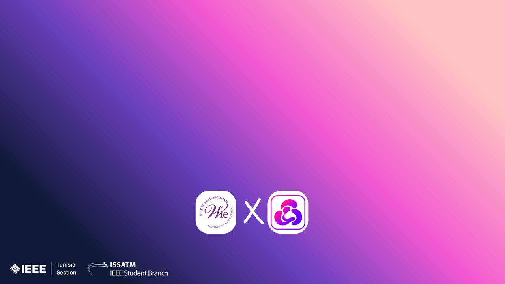
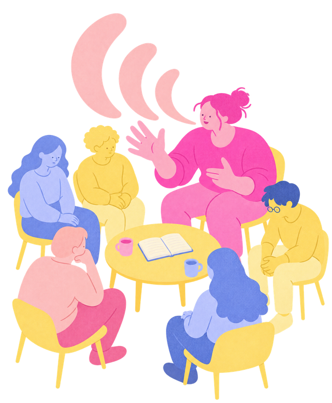
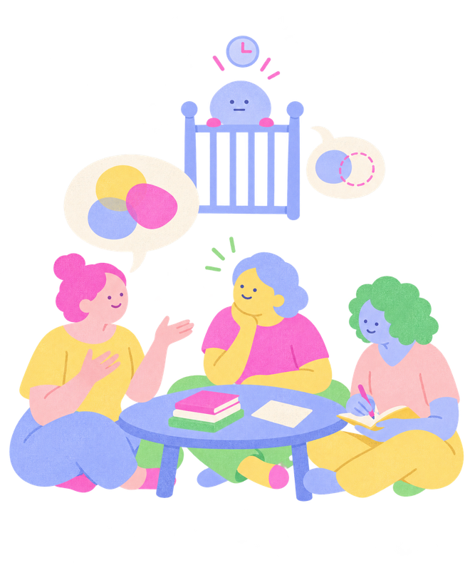
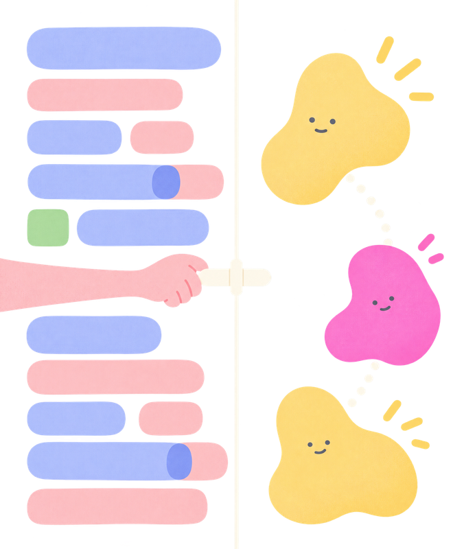
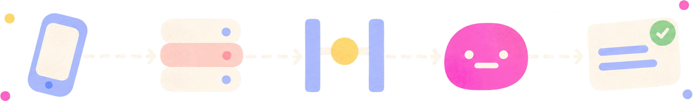

A GenAI companion that makes the circle teach firstand lets the AI speak only when the circle is done.

It fails in four specific, fixable ways.
The confident learner talks; everyone else nods. Airtime is mistaken for understanding.
Fear of judgement removes the exact question the whole group needed answered.
Nobody checks. A confident mistake becomes the group's shared truth before anyone notices.
A single explanation method is imposed on six learners who each need a different one.
A chatbot replies in three seconds. Thinking stops. Being helpful and producing learning are not the same thing.
WhatsApp and Discord organise the group. They cannot see that three people are silently lost.
A dashboard shows last week. By then the teacher can no longer act on it. That is an autopsy, not a lesson.
What is missing isn't more information. It's quiet time for peers to think first.

The AI waits because the software makes it wait — not because we asked it nicely.
The 45-second countdown is the loading screen. Nothing spins, nothing is wasted.
Before a mistake spreads, a checker step tests it against the lesson's key ideas.
The AI's job was to check the group — not to replace it.
Runs the peer window and opens a poll when the group disagrees. Keeps the discussion fair.
Gives hints one step at a time. The full answer stays locked in code until three hints have been used.
Tells the teacher who is stuck, in sixty words. It points attention at the right person — it doesn't replace them.
Runs the quiz battle, and shows exactly which idea got lost as it passed from learner to learner.
Plus two extras: a personal tutor that adapts to how you learn, and an archivist that writes the revision card you take home.


Cheap by design. Every AI call books its quota first. A test fails the build if one skips that step.
Small requests. One poll every 1.5 s answers "nothing changed" — usually under 1 KB.
Proven, not claimed. 99 unit tests on the maths. 48 live endpoint checks on a real database.
One combined call per turn handles language, intent, safety and difficulty together. So credits, confusion and translation cost no extra calls. It also drafts the hidden answer and the hints.
Used for multi-source answers, polished final wording, or an explicit escalation. Normal traffic never reaches it.
Asking the same thing twice costs nothing — the cache key is built from the question, the level, the language and the sources.
Everything works.
The big model is slow. We queue it with a time estimate and the small model keeps going.
Quota is out. Small model only, and every answer is labelled simplified.
No connection. 30 saved answers. Polls, roles and quizzes still work.
Nothing fails silently. Every step down shows a message in the learner's own language.
Honest numbers. A cached answer is still logged as a call, marked as cached.
Privacy, enforced. A test blocks any field for name, photo, gender or region.
Private training centres in Tunis. Small classes. They already run study groups and already charge by the seat.
The centre's director. Not for software — for proof. Their whole business runs on students passing.
A student who fails does not renew. If a group goes quiet in week three, the centre finds out in week three — not at the exam.
We are not inventing a market. We are measuring something these rooms already do.
| Line | Position |
|---|---|
| Revenue | Licence per class, per semester |
| First step | Free pilot: one class, one term |
| Cost to run | No GPU · at most 25 AI calls per session |
| Gets cheaper | Repeat questions are cached and cost nothing |
Said plainly: these figures come from our call budget, not from paying customers yet. The pilot turns them into real numbers.
Runs in a browser on a cheap phone. Nothing to install. Thirty answers stay available when the network drops.
Students type Darija in Arabizi and get Darija back. No English standing in the way of the idea.
A quiet learner's me too counts. Speaking most does not mean winning.
No name, photo or gender needed. The build fails if anyone adds one.
The board shows a teacher where to look. It never answers on their behalf.
99 unit tests, 48 live endpoint checks, four languages, and a working demo today.
Every claim on this slide is enforced in code — none of it is a promise in a policy.
HALQA makes the AI wait for the room — and then measures whether the room learned.
Thank you for your attention.
| → space | next slide |
| ← | previous slide |
| N | toggle speaker notes |
| T | reset the 5:00 timer |
| F | fullscreen |
| P | print / export PDF |
| # | deep link, e.g. index.html#6 |
| ? | this help |
| Esc | close |